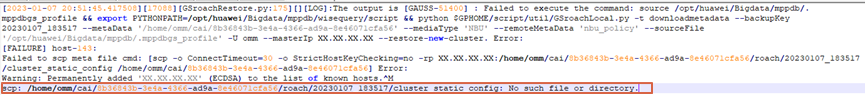

In GaussDB (DWS) 8.0.0, if a cluster copy fails to be used for the restoration to a new cluster, the message "the Roach command fails to be executed" is displayed in the job details.
The metadata of the GaussDB (DWS) node that delivers the restoration command has been successfully restored. However, an error occurs when the cluster_static_config file is copied to another node. As a result, the data restoration fails.
su - Cluster username
source Environment variable file path
cluster_static_config: No such file or directory
Example:
